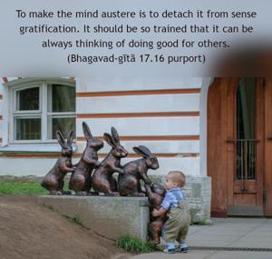
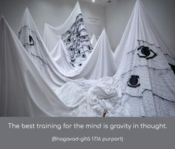

And satisfaction, simplicity, gravity, self-control and purification of one’s existence are the austerities of the mind.


To make the mind austere is to detach it from sense gratification. It should be so trained that it can be always thinking of doing good for others. The best training for the mind is gravity in thought. One should not deviate from Kṛṣṇa consciousness and must always avoid sense gratification. To purify one’s nature is to become Kṛṣṇa conscious. Satisfaction of the mind can be obtained only by taking the mind away from thoughts of sense enjoyment. The more we think of sense enjoyment, the more the mind becomes dissatisfied. In the present age we unnecessarily engage the mind in so many different ways for sense gratification, and so there is no possibility of the mind’s becoming satisfied. The best course is to divert the mind to the Vedic literature, which is full of satisfying stories, as in the Purāṇas and the Mahābhārata. One can take advantage of this knowledge and thus become purified. The mind should be devoid of duplicity, and one should think of the welfare of all. Silence means that one is always thinking of self-realization. The person in Kṛṣṇa consciousness observes perfect silence in this sense. Control of the mind means detaching the mind from sense enjoyment. One should be straightforward in his dealings and thereby purify his existence. All these qualities together constitute austerity in mental activities.